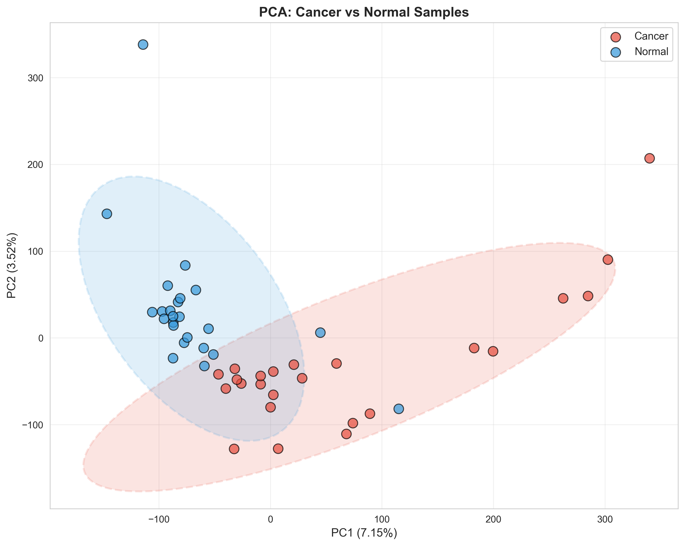
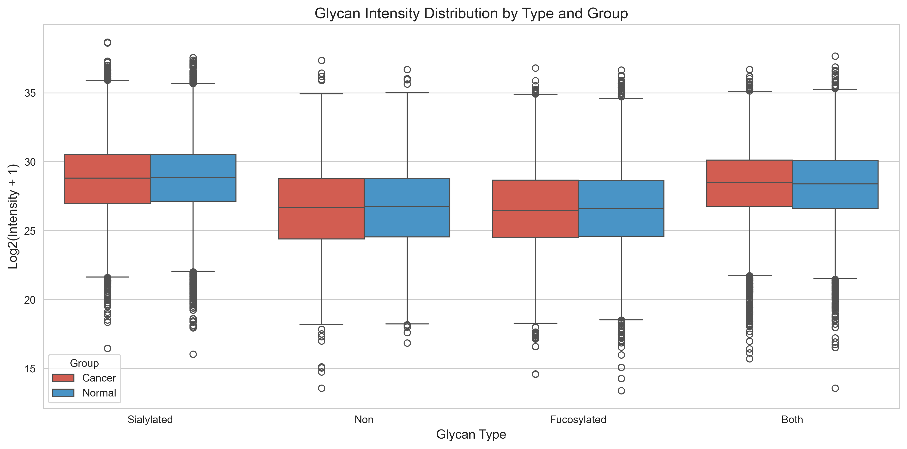
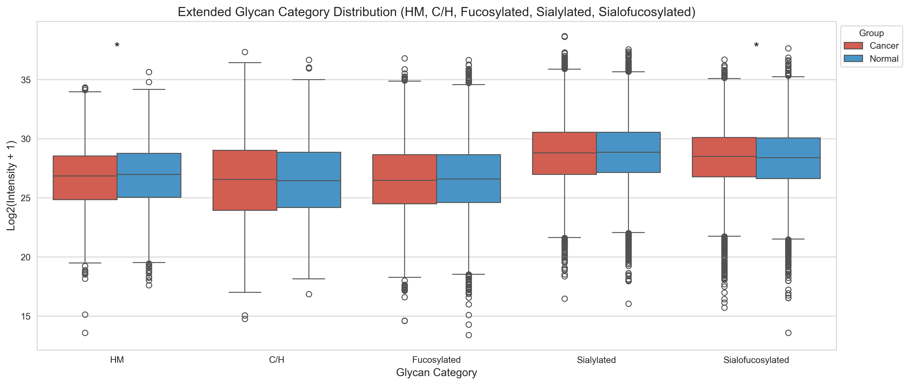

🔬 pGlyco Auto Combine - Quality Control Dashboard
Generated: 2025-10-06 12:04:04
Pipeline Version: 3.0 (ALCOA++ Compliant)
📊 Quality Metrics Summary
Total Samples
47
Cancer: 24 | Normal: 23
Glycopeptides (Filtered)
2,314
From 6,434 raw (36.0% retained)
Stable Biomarkers
368
VIP > 1.0 in ≥80% iterations
Cross-Val Accuracy
98%
10-fold stratified CV
Significant Features
105
FDR < 0.05, |FC| > 1.5
Visualizations
39
Publication-ready (300 DPI)
✅ Data Quality Checks
| Check | Status | Details |
|---|---|---|
| Detection Frequency Filter | PASS | ≥30% detection in at least one group |
| Data Integrity (ALCOA++) | PASS | Full audit trail, SHA-256 checksums verified |
| Statistical Validation | PASS | Bootstrap, cross-validation, permutation tests complete |
| Visualization Quality | PASS | 300 DPI, semantic colors, sample size annotations |
| Missing Data Handling | PASS | Skip-NA method (appropriate for MNAR data) |
📈 Key Visualizations
PCA: Cancer vs Normal

Volcano Plot

Boxplot: Glycan Types

Extended Categories

📋 Cross-Validation Results
# ======================================== # pGlyco Auto Combine - Execution Metadata # ======================================== # # Execution ID: 20251006_025230_seoljonghyeon_seoljonghyeons-MacBook-Pro.local # Generated: 2025-10-06T02:52:30.154338+00:00 # # User: seoljonghyeon # # System: Darwin 25.0.0 # Hostname: seoljonghyeons-MacBook-Pro.local # Python: 3.13.7 # # Pipeline Version: v3.0.0-4-g39e7a38 # Git Commit: 39e7a388 # Git Branch: main # WARNING: Uncommitted changes detected! # # Key Package Versions: # pandas: 2.3.3 # numpy: 2.3.3 # scipy: 1.16.2 # scikit-learn: 1.7.2 # matplotlib: 3.10.6 # seaborn: 0.13.2 # statsmodels: 0.14.5 # ======================================== # Cross-Validation Results (10-Fold) PLS-DA Components: 2 Accuracy: 0.980 ± 0.060 ROC-AUC: 1.000 ± 0.000 Fold-wise Accuracy: 1.000, 1.000, 1.000, 1.000, 1.000, 1.000, 0.800, 1.000, 1.000, 1.000 Fold-wise ROC-AUC: 1.000, 1.000, 1.000, 1.000, 1.000, 1.000, 1.000, 1.000, 1.000, 1.000
📁 Generated Outputs
- Data Files: integrated.csv, integrated_filtered.csv, filtering_report.txt
- Statistical Results: stable_biomarkers.csv, cohens_d_effect_sizes.csv, pca_permutation_test.txt
- Visualizations: 39 PNG files (300 DPI)
- Publication Materials: manuscript_methods_section.md, 2 supplementary tables (Excel)
- ALCOA++ Compliance: audit_log.jsonl, execution_metadata.json, data manifests